Fixed Partitioining or Static Partitioning
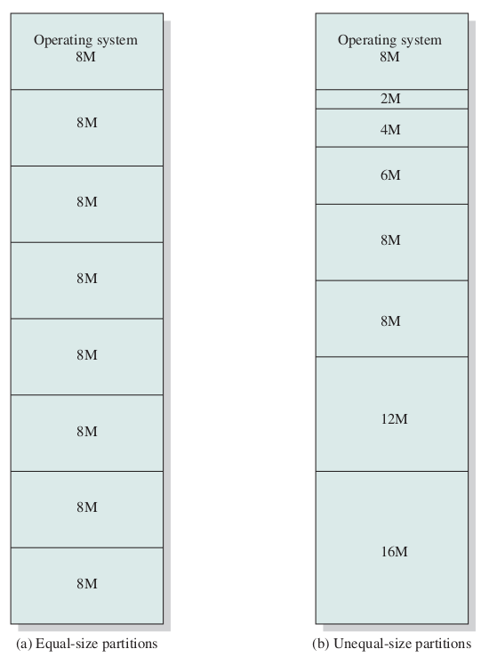
- Equal-Size Partitions
- Unequal-Size Partitions
- Pros:
- Minimal Hardware Complexity
- Simple OS Logic
- Low Overhead
- Cons:
- Internal Fragmentation
- Fixed Process Limit
- Maximum Size Limit
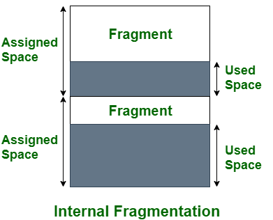
Dynamic Partitioning

- Hole Tracking or free space tracking
- Bitmaps
- Linked Lists
- External fragmentation
Feature
Fixed
Dynamic
Partition Size
Static
Dynamic
Fragmentation
Internal
External
Efficiency
Low
High
- Coalescing (The "Neighborly" Cleanup)
- Merge free space
- compaction
Placement algorithms
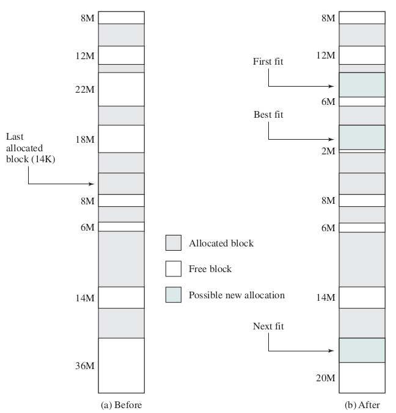
- First Fit
- pros: fast
- cons: clog
- Best Fit
- pros:
- cons: Slow, Small holes
- Worst Fit
- pros: large leftover
- cons: slow, use largest
- Next Fit
- pros: Prevents clogging
- cons:
- Quick Fit or Segregated Fit (different lists)
- pros: instant allocation
- cons: overhead of OS
Compaction or Defragmentation
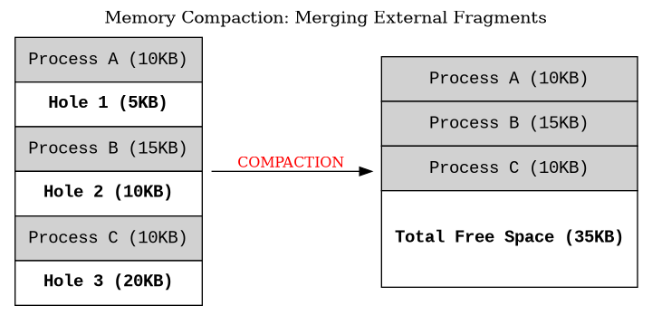
- cost
- CPU Cycles
- Bus Saturation
- System Freeze
- Strategies
- Move to One End
- Minimal Movement
- Trigger
- Allocation Failure
- Idle Time
- Threshold
- Pros
- Maximizes RAM Utilization
- Enables Large Processes
- Simplifies Placement
- Cons
- Extreme Overhead
- Requires Special Hardware
- Interrupts Execution
Buddy System Memory Management(I)

Buddy System Memory Management(II)
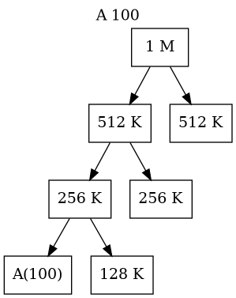
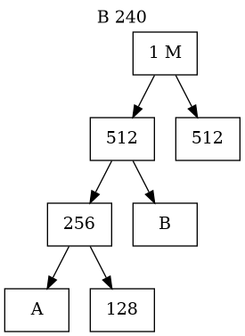
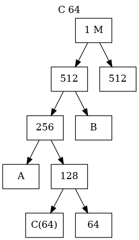
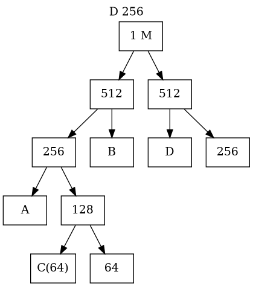
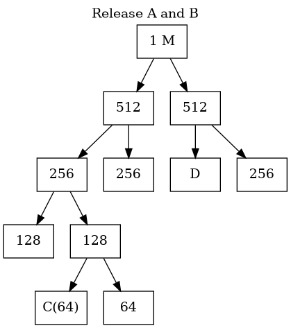
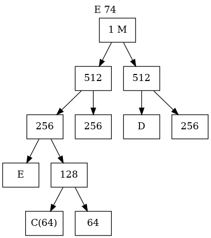
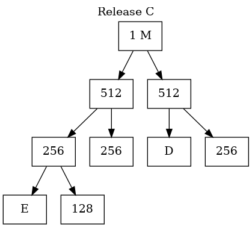
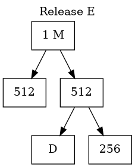
Buddy System Memory Management(III)
- A hybrid memory allocator balances fixed and dynamic partitioning
- dividing memory into partitions of base-2 sizes (powers of 2).
- The Allocation Process (Splitting)
- Memory blocks are sized as \(2^k\) (e.g., 4KB, 8KB, 16KB).
- If a process requests a size that is not a power of 2, the OS rounds up to the next highest power.
- If only a larger block (e.g., 64KB) is available, the OS recursively splits it in half until the target size is reached:
- 64KB splits into two 32KB buddies.
- One 32KB splits into two 16KB buddies (one is allocated, one remains free).
- The Deallocation Process (Coalescing)
- When a block is freed, the OS checks the status of its specific "buddy".
- If the buddy is also free, they immediately merge back into their parent size.
- This process cascades upward automatically to form the largest possible free blocks.
- The Mathematical Advantage (Speed)
- The system is incredibly fast because finding a buddy requires no list searching.
- The buddy of a block of size \(S\) at address \(A\) is located at exactly \(A \oplus S\) (Bitwise XOR).
- The OS calculates this directly in hardware.
- Pros:
- Extremely fast allocation
- Coalescing
- highly predictable performance.
- Cons:
- Internal Fragmentation
- External Fragmentation
- Usage
- The Linux Kernel
- Early UNIX Systems
- Modern Memory Allocators (jemalloc)
- Used by FreeBSD and Facebook
Thanks to Gemini AI for helping to create this slide
- Lecture tip: Draw a tree on the board starting with a 1024KB block and split it down the left side to show how the "buddies" wait for their partner to return.
- Real-world connection: Mention that the Linux kernel still relies on a variation of the Buddy System for managing its physical memory pages today because the bitwise XOR speed is unbeatable.
- The main takeaway for students is the engineering trade-off: We are purposely wasting memory (Internal Fragmentation) to gain CPU speed (O(1) coalescing).
A hybrid memory allocator that balances fixed and dynamic partitioning by dividing memory into partitions of base-2 sizes (powers of 2).
Yes, absolutely! The Buddy System is not just a theoretical academic concept; it is one of the most famous and widely implemented memory management algorithms in computing history.
Here is where it has been used in the real world:
1. The Linux Kernel This is the most prominent and important modern example. The Linux operating system relies on a binary buddy allocator as its primary physical memory manager (specifically, the "page allocator").
- When the kernel needs a block of contiguous memory pages to give to a process or use for itself, it queries the buddy system.
- To solve the problem of internal fragmentation for very small memory requests, Linux layers a second system called a Slab Allocator on top of the buddy system. The buddy system handles the big chunks, and the slab allocator carves those chunks into exact sizes for the kernel to use.
2. Early UNIX Systems Various forms of the buddy system were used in early UNIX distributions and other historical operating systems to manage dynamic memory efficiently before modern paging hardware became universally standard.
3. Modern Memory Allocators (`jemalloc`) While user-space programming functions (like calling malloc() in a C program) don't typically use a pure buddy system today, modern high-performance allocators like jemalloc (used by FreeBSD and Facebook) use concepts directly derived from it. They group memory into distinct "size classes" and split large blocks into smaller runs, mimicking the buddy system's efficiency.
Why it survived in the real world: It survived the jump from textbooks to production kernels precisely because of the bitwise XOR math trick. When an operating system kernel is managing raw hardware memory, it has to be lightning fast. The ability to find, split, and merge free memory in $O(1)$ time—meaning it takes the exact same amount of time regardless of how much memory is installed—makes the wasted space (internal fragmentation) a completely acceptable trade-off.
- Summary of Trade-offs
- Pros:
- Extremely fast allocation
- Coalescing
- highly predictable performance.
- Cons:
- Internal Fragmentation
- External Fragmentation
- The Buddy System bridges the gap between fixed and dynamic partitioning.
- An address X of size 2^k has a unique buddy at X XOR 2^k.
- XOR-based buddy addressing allows O(1) identification of the neighbor.
- Trade-off: We sacrifice up to 50% of block space (Internal Fragmentation) to gain high-speed allocation/coalescing.
- Core Idea: * Memory is allocated in sizes of powers of 2 (e.g., 2, 4, 8, 16... KB). * If a request doesn't match a power of 2, the next larger size is used.
- The "Buddy" Logic: * If a block of size \(2^k\) is needed and only a \(2^{k+1}\) block is available, the OS splits it into two equal "buddies". * When a block is freed, the OS checks if its buddy is also free. * If both are free, they coalesce back into the larger parent block.
- Pros & Cons: * Pros: Very fast coalescing (merging) compared to standard dynamic partitioning. * Cons: Suffers from Internal Fragmentation (up to 50% per block).
Process
- Program
- Place: Cards in card reader, file in disk, flash, etc.
- passive
- Process
- Place: Main Memory (RAM)
- Active
Process Status
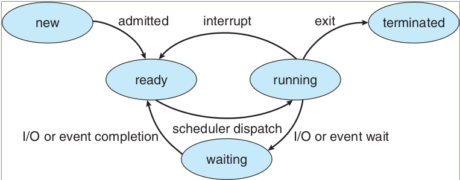
Process Control Block (PCB)

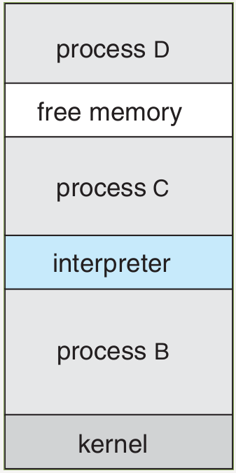

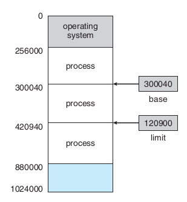
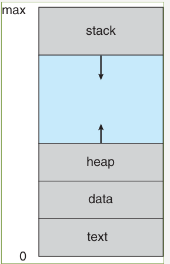


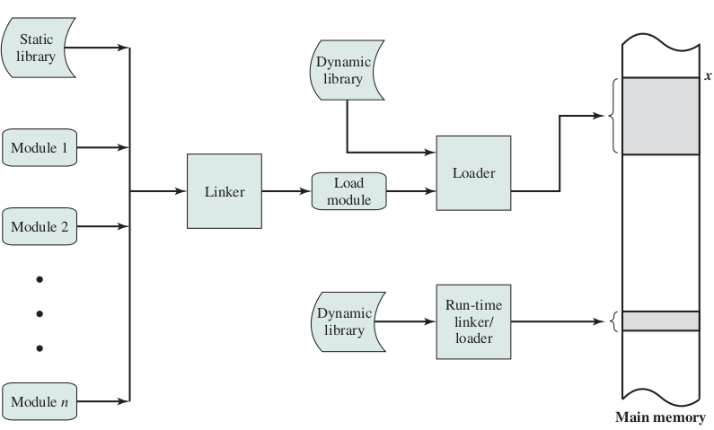
address binding, loader
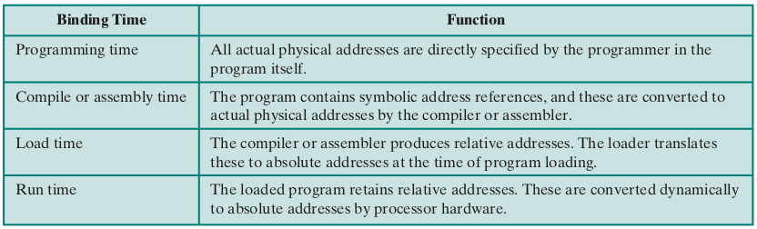
address binding, linker

Blocked or Waiting
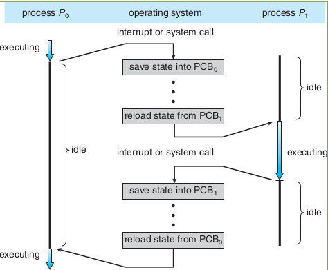

Process Suspension

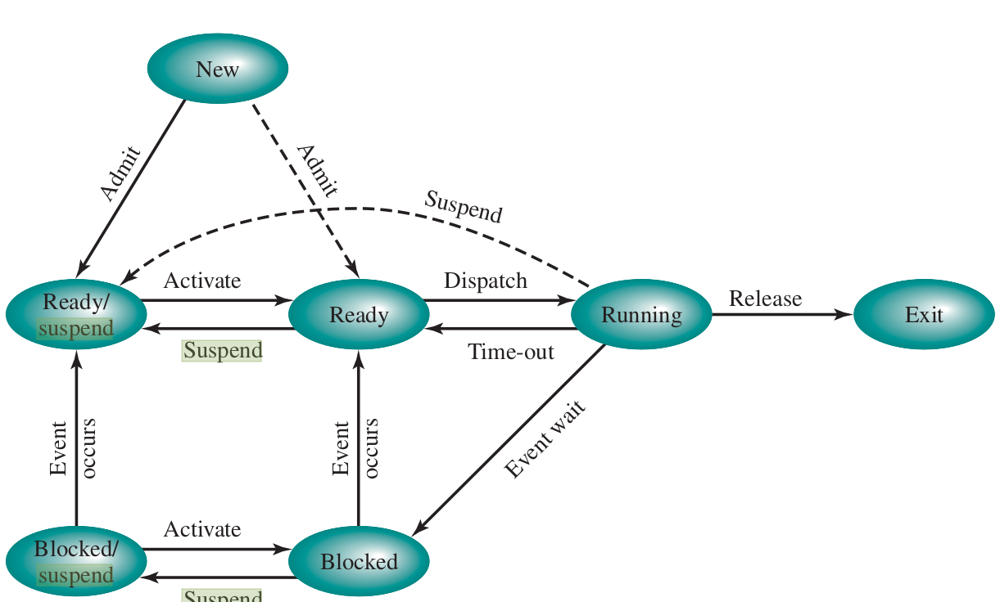
Process Suspension (Swapping)
- The 7-State Model Transitions
- Blocked → Blocked/Suspend
- Ready → Ready/Suspend
- Blocked/Suspend → Ready/Suspend
- Reasons for Suspension
- Swapping
- User Request
- Parent Request
- Timing
- Pros
- Increases the degree of multiprogramming.
- Frees space for higher-priority or "Ready" processes.
- Cons
- High Latency
- Thrashing
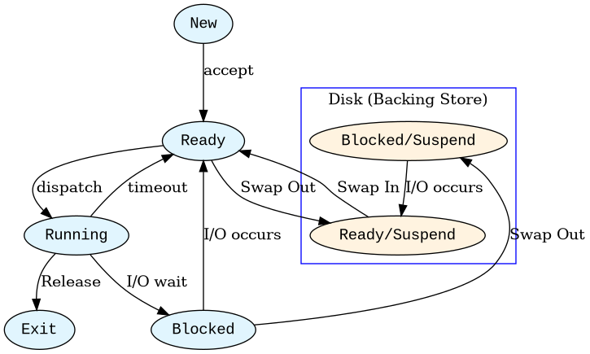
- Suspension is the bridge between Memory Management and Process Management.
- Emphasize the difference between "Blocked" (waiting in RAM) and "Blocked/Suspend" (waiting on disk).
- Compaction often requires suspension: all processes are "frozen" and moved, which is why it feels like the computer has "locked up."
- Thrashing: Explain that if the OS swaps too aggressively, the disk light stays on constantly and CPU utilization drops to near zero.
Memory Overlays

- Architectural Components
- The Execution Process
- Pros:
- zero hardware or MMU support
- Work on small memory
- Cons:
- Massive Programmer Burden
- Difficult to debug
- Hard to modularize
- Hard to upgrade.
- The Mainframe Era (1960s – 1970s)
- 16KB to 64KB
- IBM was the undisputed king
- 1964, 16KB, Transients
- UNIVAC & Sperry Rand
- NASA & The Aerospace
- Virtual Memory by Paging
- The Microcomputer/PC Era, 1980s, early 1990s
- Intel 8086/8088
- MS-DOS / PC DOS/ Dr Dos
- Borland, Turbo Pascal/Turbo C
- Lotus 1-2-3
- The Extinction of Overlays
- Virtual Memory by Paging
- Intel Protected Mode
- Windows 95 and Linux
- OS tracking memory entirely
- Historical Context: Overlays were widely used in the DOS era (dealing with the infamous 640KB RAM barrier) and early mainframes before Virtual Memory (Paging) became universal.
- The Key Distinction for Exams: Unlike Swapping or Virtual Memory—which are 100% transparent to the programmer and handled by the OS/Hardware—Overlays are entirely driven by the user-space software design.
- Classic Example: A two-pass compiler. Pass 1 handles lexical analysis and syntax trees. Pass 2 handles optimization and code generation. They never need to coexist in RAM simultaneously, making them perfect candidates for overlays.
To give your students a rich historical perspective, you can explain that Overlays emerged in the late 1950s and 1960s, an era when hardware memory was built using primitive "magnetic cores" (literally tiny metal donuts strung on wires). Because core memory was incredibly expensive—costing upwards of $1 to $2 per byte—computers had microscopic amounts of RAM compared to their massive physical size.
The method was championed by the most dominant tech titans of the 20th century across two distinct eras: the Mainframe Era and the Personal Computer (PC) Era.
---
### 1. The Mainframe Era (1960s – 1970s)
In this era, computers filled entire rooms, cost millions of dollars, yet frequently had only 16KB to 64KB of main memory.
- IBM (International Business Machines): IBM was the undisputed king of computing at the time. When they released the landmark System/360 mainframes in 1964, the low-end models had a tiny 16KB memory limit. To make their operating system (DOS/360) fit, IBM’s own engineers designed the OS kernel using overlays, which they called Transients. Essential hardware error routines ($A$-Transients) and file services ($B$-Transients) were manually swapped in and out of a tiny 556-byte buffer in RAM as needed.
- UNIVAC & Sperry Rand: One of IBM's primary competitors, UNIVAC, utilized sophisticated overlay systems in their EXEC I and EXEC II operating systems for the UNIVAC 1107/1108 mainframes.
- NASA & The Aerospace Industry:
NASA's early flight computers had strict weight and power limits, meaning very little memory. The Space Shuttle Primary Avionics System Software (PASS) famously relied heavily on meticulously programmed overlays to manage navigation, liftoff, and landing sequences within strict hardware constraints.
---
### 2. The Microcomputer/PC Era (1980s – early 1990s)
History repeated itself two decades later when personal computers emerged. Although microprocessor memory was cheaper, early PC architectures introduced a new artificial bottleneck: The 640KB Barrier.
- Microsoft and IBM (MS-DOS / PC DOS):
When the IBM PC was released in 1981 running Microsoft's MS-DOS, it used the Intel 8086/8088 processor. Because of how the system architecture was designed, standard user applications were strictly limited to 640KB of "Conventional Memory". As software grew more complex, companies hit a brick wall.
- Lotus Development Corporation (Lotus 1-2-3):
The killer app of the 1980s was Lotus 1-2-3, a massive spreadsheet program that businesses ran on IBM PCs. To allow users to build large spreadsheets without running out of the 640KB RAM, Lotus developers manually chopped their software into overlays. The core math engine stayed in memory, while graph drawing modules, printing tools, and file import functions were kept on floppy disks and loaded dynamically into an overlay buffer.
- Borland (Turbo Pascal / Turbo C):
Borland was famous for its programming tools. Because compilers require multiple distinct steps (Lexical Analysis $rightarrow$ Parsing $rightarrow$ Optimization $rightarrow$ Code Generation), Borland integrated Overlay Managers directly into their compilers. A programmer writing a massive program in Turbo Pascal could simply check a box, and the Borland compiler would automatically generate the overlay tree structure for them.
---
### The Extinction of Overlays
The decline of overlays is directly tied to an engineering debate at IBM in the late 1960s. An IBM researcher named David Sayre argued that automated Virtual Memory (Paging) handled by hardware and the OS could perform just as well as, or better than, a human programmer designing complex overlay structures.
By the mid-1970s for mainframes, and the mid-1990s for PCs (with the release of Windows 95 and Linux running in Intel "Protected Mode"), Virtual Memory became standard. The OS took over memory tracking entirely, relieving programmers of the massive burden of designing overlays.
> An Anecdote for Class: > You can tell your students that in the 1980s, being an "Overlay Architect" was a highly praised, highly paid specialty skill. A single mistake in tracking your code dependencies could cause a program to overwrite its own active loop, resulting in spectacular system crashes!
Cache Memory & Locality
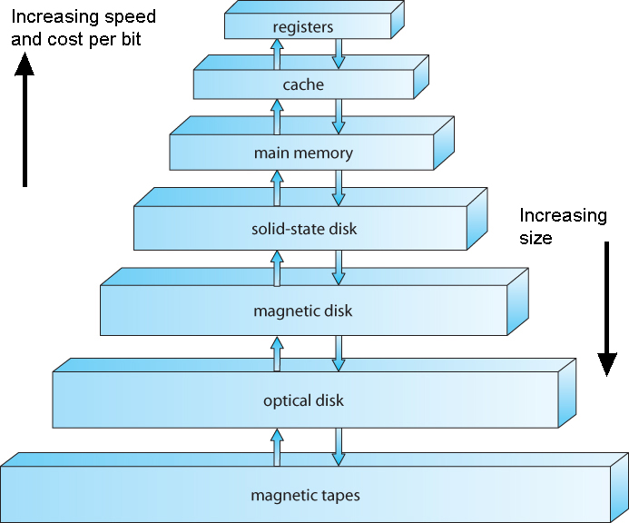
- The Principle of Locality
- Programs do not access memory completely at random
- They cluster around specific addresses.
- Temporal Locality
- loop variables
- function parameters
- variable sum
- Spatial Locality
- sequential array traversal
- a[i+1] after a[i]
- streaming instructions
- The Cache Mechanics
- Cache Hit
- Cache Miss
- Line Size
- fixed-size blocks
- Cache Lines
Cache Management & OS Implications
- Cache
- Smaller
- faster storage device
- subset of the data
- Memory hierarchy
- level k for level k+1
- Registers as cache
- Main memory for the disk
- Disk from remote storage
- Locality of access is the key
- Most accesses by faster levels
- Few accesses by slower levels
- Write Policies (Coherency)
- Write-Through(Safe but slower).
- Write-Back, modify (dirty) bit
- Similar to other Levels
- rsync (unix, Linux, FreeBSD)
- Don't exactly similar to backup
- The Hidden Cost of Context Switching
- Process P0 to Process P1
- CPU cache P0's data
- P1 suffers Cache Misses
- Cache Pollution or "Warm-up"
- Lecture Insight: Connect this to the Microkernel vs. Monolithic debate. Microkernels require frequent IPC and context switching, meaning they suffer heavily from cache pollution because the cache is constantly cleared of relevant server data.
- Multicore Cache Coherency: Briefly mention the challenge of multiple CPU cores having different values for the same RAM address in their local L1 caches, which requires hardware snooping protocols.
- Key Takeaway: The OS designer must write code that minimizes context switches and structure data alignment to keep the CPU cache "hot".

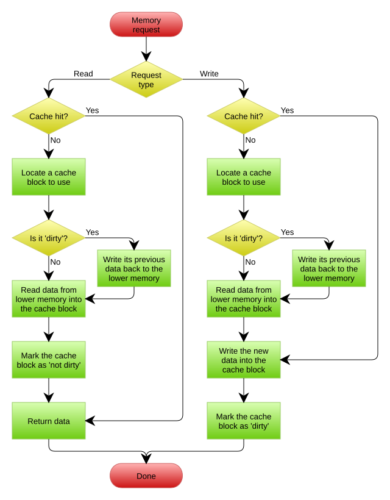
اثر نوع برنامهنویسی و کامپایلر بر حافظهٔ مجازی
1 void row_by_row(void){ 2 double xa[1000][1000]; 3 int i,j; 4 for(i=0;i<1000;i++) 5 for(j=0;j<1000;j++) 6 xa[i][j]=i*1000+j; 7 }
1 void column_by_column(void){ 2 double xa[1000][1000]; 3 int i,j; 4 for(j=0;j<1000;j++) 5 for(i=0;i<1000;i++) 6 xa[i][j]=i*1000+j; 7 }
Effective Access Time (EAT)
- \(t_m\) : زمان دسترسی به حافظهی اصلی
- \(t_c\) : زمان دسترسی به حافظهی نهان
- \(h_c\) : ضریب اصابت به حافظهی نهان
اگر ضریب اصابت (یا نسبت اصابت) برای پردازندهای 0.95 باشد و سرعت دسترسی به حافظهٔ اصلی 100 میکرو ثانیه باشد و سرعت دسترسی حافظهٔ نهان 1 میکرو ثانیه باشد در این صورت زمان دسترسی مؤثر برابر خواهد بود با
- EAT = 0.95 * 1 + (1 − 0.95) * (100 + 1)
- EAT = 0.95 + 0.05 * 101
- EAT = 0.95 + 5.05
- EAT = 6 μs
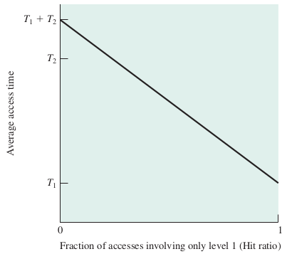
| ms | μs | ns | action |
| 0.5 | CPU L1 dCACHE reference | ||
| 1 | speed-of-light (a photon) travel a 1 ft (30.5cm) distance | ||
| 5 | CPU L1 iCACHE Branch mispredict | ||
| 7 | CPU L2 CACHE reference | ||
| 71 | CPU cross-QPI/NUMA best case on XEON E5-46 | ||
| 100 | MUTEX lock/unlock | ||
| 100 | own DDR MEMORY reference | ||
| 20 | 000 | Send 2K bytes over 1 Gbps NETWORK | |
| 250 | 000 | Read 1 MB sequentially from MEMORY | |
| 10 | 000 | 000 | DISK seek |
| 10 | 000 | 000 | Read 1 MB sequentially from NETWORK |
| 30 | 000 | 000 | Read 1 MB sequentially from DISK |
| 150 | 000 | 000 | Send a NETWORK packet CA -> Netherlands |
Motherboard


Direct Memory Access(DMA)

BIOS
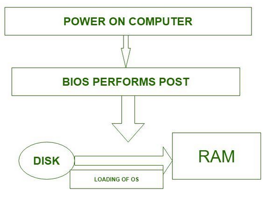

Boot sequence
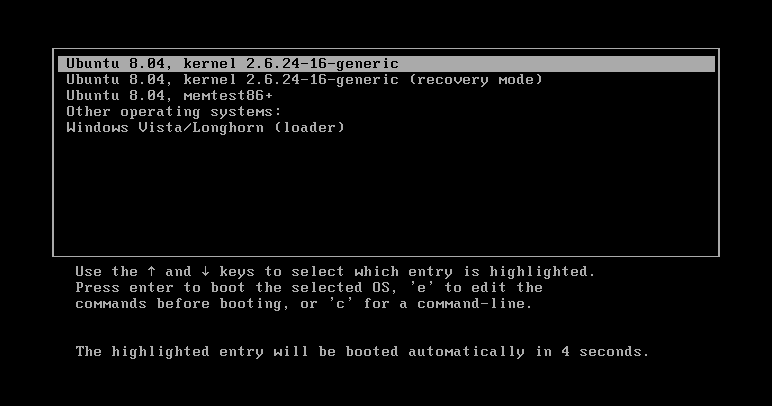

Microkernel Architecture

- Core Responsibilities (Inside Kernel Space)
- Low-Level Memory Management
- Thread Scheduling
- Inter-Process Communication (IPC)
- Architecture Mechanics
- Services run as isolated user processes
- Application cannot make a direct system call
- Send an IPC message through the microkernel
- Forwards it to the File Server
- Pros:
- High Reliability & Isolation
- Security
- Portability & Extensibility
- Cons:
- Performance Overhead
- History
- The Mach kernel
- core macOS/iOS XNU hybrid
- QNX
- seL4
- The Tanenbaum-Torvalds Debate
- MINIX
- safety and stability.
- Real-World Examples: The Mach kernel (which forms the core of Apple's macOS/iOS XNU hybrid), QNX (used heavily in critical automotive and medical systems due to high reliability), and seL4 (mathematically proven secure microkernel).
- The Tanenbaum-Torvalds Debate: In 1992, Andrew Tanenbaum (creator of MINIX) and Linus Torvalds had a famous debate. Tanenbaum argued Linux was obsolete because it was monolithic; Torvalds argued microkernels were impractical due to performance costs.
- Teaching Concept: Highlight that a microkernel trades sheer CPU velocity (performance) for bulletproof architectural safety and stability.
Multi Layer

Effects on current situations
Monolithic
END
References(I)
- https://stackoverflow.com/questions/18550370/calculate-the-effective-access-time
- http://os-book.com/
- https://en.wikipedia.org/wiki/Paging
- https://en.wikipedia.org/wiki/Page_(computer_memory)
- http://blog.cs.miami.edu/burt/2012/10/31/virtual-memory-pages-and-page-frames/
- https://www.tldp.org/LDP/tlk/mm/memory.html
- https://www.cse.iitb.ac.in/~mythili/teaching/cs347_autumn2016/notes/07-memory.pdf
References(II)
- https://www.kernel.org/doc/html/latest/admin-guide/mm/index.html
- https://www.geeksforgeeks.org/operating-system-paging/
- https://samypesse.gitbooks.io/how-to-create-an-operating-system/Chapter-8/
- https://www.javatpoint.com/os-segmented-paging
- https://www.geeksforgeeks.org/difference-between-internal-and-external-fragmentation/
- https://web.fe.up.pt/~arestivo/presentation/os-memory/#15
- https://binaryterms.com/contiguous-memory-allocation-in-operating-system.html
- https://github.com/mor1/ia-operating-systems/wiki/06-Virtual-Addressing
References(III)
- https://github.com/mor1/ia-operating-systems
- https://www.faceprep.in/operating-systems/operating-systems-fragmentation-and-compaction/
- https://slideplayer.com/slide/7084682/
- https://www.cs.uic.edu/~jbell/CourseNotes/OperatingSystems/images/Chapter1/1_4_StorageDeviceHierarchy.jpg
- http://images.bit-tech.net/content_images/2007/11/the_secrets_of_pc_memory_part_1/hei.png
- https://en.wikipedia.org/wiki/Cache_(computing)
- https://www.byclb.com/TR/Tutorials/dsp_advanced/ch1_1_dosyalar/image025.jpg
- https://en.wikipedia.org/wiki/File:Cache,hierarchy-example.svg
- https://en.wikipedia.org/wiki/CPU_cache
- https://tutorialspoint.dev/image/Translation.png
{kind=link}
{kind=link}
{kind=link}
{kind=link}
{kind=link}
References(IV)
- https://www.cs.princeton.edu/courses/archive/spr11/cos217/lectures/18MemoryMgmt.pdf
- http://harmanani.github.io/classes/csc320/Notes/ch05.pdf
- https://www.cs.princeton.edu/courses/archive/spr11/cos217/lectures/18MemoryMgmt.pdf
- http://harmanani.github.io/classes/csc320/Notes/ch05.pdf
- https://www.gatevidyalay.com/translation-lookaside-buffer-tlb-paging/
- https://www.amazon.com/ASUS-DDR3-Intel-Motherboard-H61M/dp/B00BN36V4W
- https://www.asus.com/Motherboards-Components/Motherboards/Workstation/P10S-WS/
- https://commons.wikimedia.org/wiki/File:Intel_D945GCCR_Socket_775.png
{kind=link}
References(V)
- https://witscad.com/course/computer-architecture/chapter/dma-controller-and-io-processor
- https://www.uou.ac.in/lecturenotes/computer-science/BCA-17/Computer%20Organization%20Part%202.pdf
- https://www.pvpsiddhartha.ac.in/dep_it/lecturenotes/CSA/unit-5.pdf
- https://toshiba.semicon-storage.com/us/semiconductor/knowledge/e-learning/micro-intro/chapter4/interrupt-processing-types-interrupts.html
- https://stackoverflow.com/questions/4087280/approximate-cost-to-access-various-caches-and-main-memory#4087315
- https://codex.cs.yale.edu/avi/os-book/